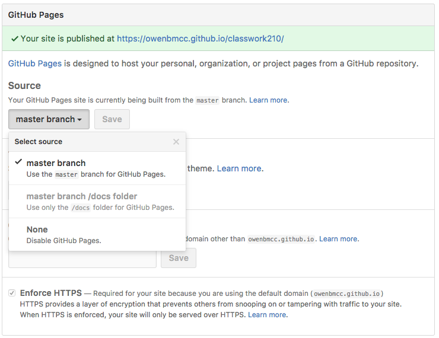
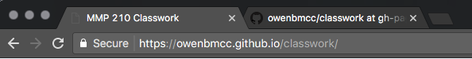

Getting started
Using GitHub as a publishing tool helps us do a few things:
- Learn git! This is a very valuable and marketable tool.
- Collaborate easily.
- Publish simple webpages online for free.
What is GitHub?
- GitHub.com
- Hosting for git repositories
- Social network for code
Sign up at GitHub.com

Use an email you can check, you will have to confirm your email.

Once your account is set up, click the + button in the menu bar to create a new repository. A repo is a source code repository is a file archive and web hosting facility where a large amount of source code, for software or for web pages, is kept, either publicly or privately. They are often used by open-source software projects and other multi-developer projects to handle various versions.

Add a repository name and description. For this class, mmp310 or classwork310 would be fine.
Copy the remote location of the repo that appears once it is created:

Remotes
Once you have created a GitHub account or hosting on another service, you can use remotes to push and pull your git repository to keep your changes current on you local drive and remote server.
$ git remote add <remote-name> <url>
$ git remote add origin https://github.com/owenbmcc/classwork310.git
We will add this remote to our repo using the git remote add origin command in Terminal.

For future references, the GitHub remote is available in the Clone/Download dropdown.
Git push/pull
Once the remote is set, you can use git push to add your initial commit to the remote repo.
$ git push origin master
$ git push <remote> <branch>
If you push changes from another source you need to remember to pull those changes into your repo before editing or you will create conflicts or inconsistencies in your code. In general, it is always a good idea to git pull before editing code and especially before trying to git push.
GitHub Pages
We're going to use GitHub Pages to publish the repo.
Navigate to the Settings tab on the GitHub repo page and scroll down to the to the GitHub Pages section. Click the dropdown under Source and choose the master branch.

Your website will be published at the URL <username>.github.io/<reponame> where your username is you GitHub acount and the repo name is whatever you named your repository.


When you make changes to your site, you can use git commit to add a new snapshot to your repo and then push the changes to the remote GitHub repo, and it will publish the new version.
Remember to always write a new commit message that describes the changes you have made.
Cloning
In order to work on your code from another computer, you need to clone your repo. You will make a full copy of your code, which you can edit and then push to the same origin. Then when you return to class you can pull those changes and continue working.
To clone an existing repository you can find the remote address on the GitHub page for the repo.

Or use the clone command.
$ git clone http://github.com/<user-name>/<repo-name>.git
config
$ git config
Config is used to configure your account settings for making commits. You may need to update your configuration on a new machine.
$ git config --global user.name = "Owen Roberts"
$ git config --global user.email = oroberts@bmcc.cuny.edu
Once you configuration is set, use push and pull to download new code and add your changes to the remote repository. Remember to always pull from the origin before attempting to push.
$ git pull <remote-name> <branch>
$ git pull origin master
$ git add .
$ git commit -m "adds new feature"
$ git push origin master